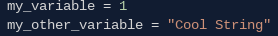
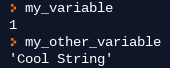
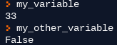

Python's Main Data Types
Integers
In Math, you might have learnt that the number set of integers is defined as \(\mathbb{Z} = \{\dots , -2, -1, 0, 1, 2, \dots\}\). In Python 3, the operators +, -, *, /, //, %, =, ==, !=, >=, <=, <, > work with integer operands.
Floating-Point Numbers
Like integers, floating-point numbers (floats) are a way of representing numbers that are an element of the set of rational numbers \(\mathbb{Q} = \{\frac{m}{n} \mid m, n \in \mathbb{Z}, n \neq 0\} \). In Python 3, the operators that work with integers also work with floats, but if an operation is performed with one or more integer operands and one or more float operands, the expression will return a float.
Booleans
In Python, True and False are booleans. When the ==, !=, >=, <=, <, > operators are used to evaluate whether an expression is true or false. An expression with one of these operators is called a Boolean Expression and is especially useful for programming logic.
Strings
We'll get back to these in a later lesson. All you need to know is that a string is a sequence of characters. However, you should note that these characters are not exclusively from the alphabet, but can be integers, symbols, anything, as long as they're enclosed in quotation marks or apostrophes.
Variables
Variables are a way of storing, manipulating, and retrieving data. To make a variable, type:
 Variable names can be anythin you want :)
Now you can perform operations on this variable and change it:
Operators
Please refer to this LINK for more information on operators.